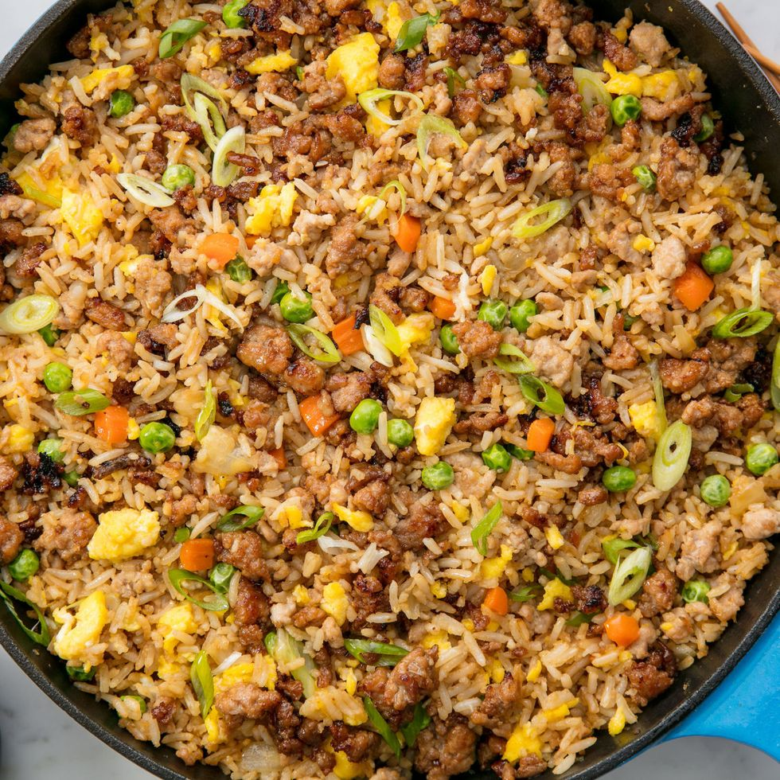

Pork Fried Rice

Description
"Fried rice originated in China during the Sui Dynasty and has become a popular stir-fried dish in many different countries and across cultures. In its simplest terms, fried rice is exactly what its name implies: cooked rice that's reheated with oil. Today, there are thousands of recipes and countless restaurant variations, regional specialties, and new twists on the old classics. This version of pork fried rice is our go-to when we want to use ground pork. " - Delish.com
List of Ingredients
- 2 tbsp. vegetable oil, divided
- 3 large eggs, lightly beaten
- 1/2 onion, chopped
- 1 carrot, peeled and cut into 1/4" pieces
- 1/2 lb. ground pork
- kosher salt
- Freshly ground black pepper
- 1 tbsp. grated ginger
- 2 cloves garlic, minced
- 1 c. frozen peas
- 4 c. cooked white rice
- 2 tbsp. low-sodium soy sauce
- 1 tbsp. hoisin sauce
- 3 scallions, thinly sliced
- 1 tsp. sesame oil
Cooking Steps
- In a large skillet over medium heat, heat 1 tablespoon vegetable oil. Add eggs and let sit for a few seconds before lightly scrambling and folding the egg mixture over itself. Remove from skillet and set aside.
- In the same skillet, heat remaining tablespoon oil then add onion and carrot. Cook, stirring occasionally, until the vegetables are tender. Add the ground pork to the skillet and season with salt and pepper, then cook until the pork is no longer pink and is starting to caramelize. Stir in ginger, garlic, and peas and cook until fragrant, about 1 minute.
- Add the rice then stir in soy sauce, hoisin, scallions, and sesame oil. Toss to combine and fold in scrambled eggs. Serve immediately.
Link to Pork Fried Rice Recipe!
Return to Homepage